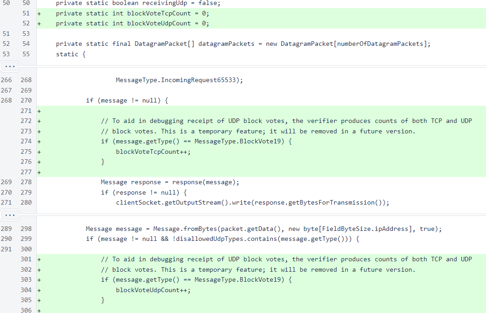
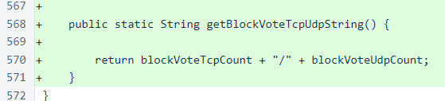
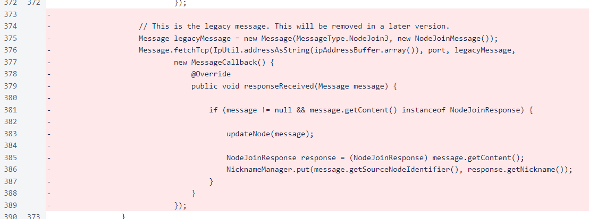
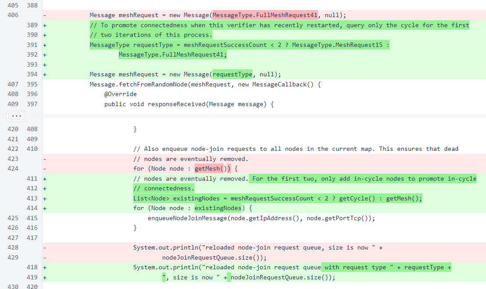
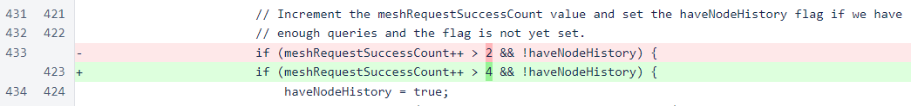
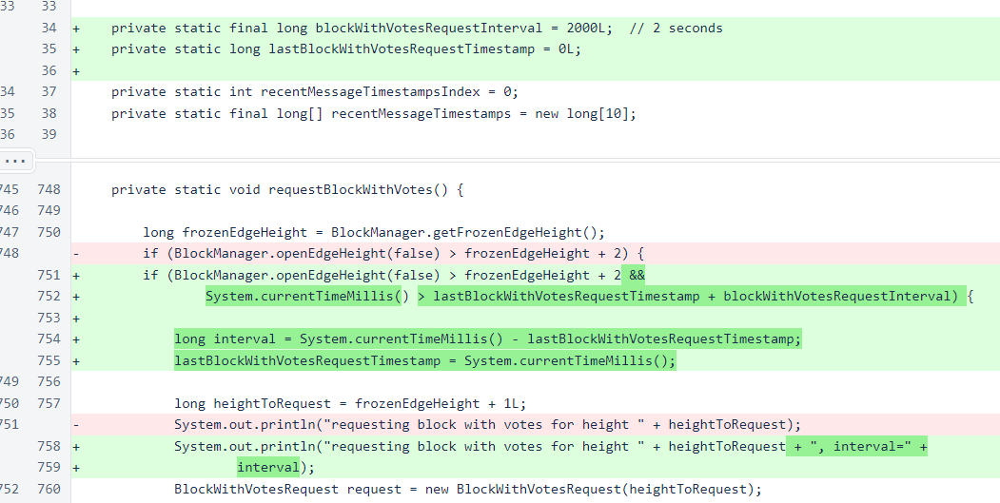
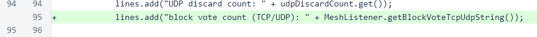

Nyzo version 521 (commit on GitHub) improves the node-join process and out-of-cycle performance. It also adds another field to the private version of the status response to further aid in debugging UDP block-vote issues.
This version only affects the verifier.
In MeshListener, fields were added to track the counts of TCP and UDP block votes received. These fields are incremented in the appropriate locations.
A method was added to allow the status response to access the vote-count information.
Sending of the legacy node-join message has been eliminated from NodeManager.sendNodeJoinRequests(). Such node-join messages are still supported and even sent in response to like messages (see NodeManager.updateNode()), but this is the first step in removing this message from the system in favor of the version-2 node-join message.
When reloading the node-join queue in NodeManager.requestMesh(), the first two iterations seek only to connect to in-cycle nodes. While such preference to in-cycle nodes is neither necessary nor indicated by a precise concern, it is still a good design choice. Periodic node-join messages serve separate purposes for in-cycle and out-of-cycle nodes. For in-cycle nodes, these messages promote connectedness to ensure that the cycle can process the blockchain properly. For out-of-cycle nodes, these messages identify lapsed nodes to remove those nodes from the lottery.
To compensate for the 2 iterations that only request in-cycle nodes, the haveNodeHistory value is now set to true 2 iterations later than it was before.
In Verifier.requestBlockWithVotes(), a minimum interval of 2 seconds between requests is now enforced. Without this interval, an out-of-cycle verifier would typically send at least 5 or 6 requests for each block before receiving and processing the first response. This minimum interval immediately reduces CPU and network usage on verifiers that update to this version, and CPU and network usage of all verifiers will further improve as more verifiers update to this version.
In the private section of StatusResponse, the new block-vote field has been added. This field shows the total number of block votes that have been received over TCP and UDP. This field was added to help diagnose problems with receipt of UDP block votes. If your verifier is operating properly, you can ignore this field. It is only intended to provide an extra piece of information to help fix verifiers that are not operating properly.
